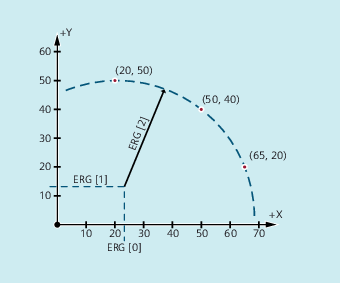

With CALCDAT, you can calculate the radius and the circle center point coordinates from the three or four points known along the circle. The specified points must be different.
Where four points do not lie directly on the circle an average value is formed for the circle center point and the radius.
| Note |
Calculation regulation for the averagingThe arc calculation is performed four times:
The values of the circle center point coordinates abscissa and ordinate are calculated by adding the abscissa and ordinate values of the four arc calculations and dividing by four. The radius is calculated by forming the root from the sum of the four radii from the arc calculations and multiplying the result with 0.5. |
| Predefined function to calculate the radius and center point coordinates of a circle from three or four points | ||||
| Variable for the circle calculation status | ||||
Type: | BOOL | ||||
Value: | TRUE | The specified points lie on a circle. | |||
FALSE | The specified points do not lie on a circle. | ||||
| Variable to specify the circle points | ||||
| Number of circle points (3 or 4) | ||||
| Type of coordinate data, | ||||
| Parameter for the number of the points used for the calculation (3 or 4) | ||||
| Variable for result: Circle center point coordinates and radius | ||||
0 | Circle center point coordinate: Abscissa value | ||||
1 | Circle center point coordinate: Ordinate value | ||||
2 | Radius | ||||
| Note |
Please note that the variables must be defined before they are used. |
Using three points it should be determined as to whether they are located on a circle segment.
| Program code | Comment |
|---|---|
| N10 DEF REAL PT[3,2]=(20,50,50,40,65,20) | ; Variable to specify the points of a circle. |
| N20 DEF REAL RES[3] | ; Variable for result. |
| N30 DEF BOOL STATUS | ; Variable for status. |
| N40 STATUS=CALCDAT(PKT,3,ERG) | ; Call of the determined circle data. |
| N50 IF STATUS == FALSE GOTOF ERROR | ; Jump to error. |